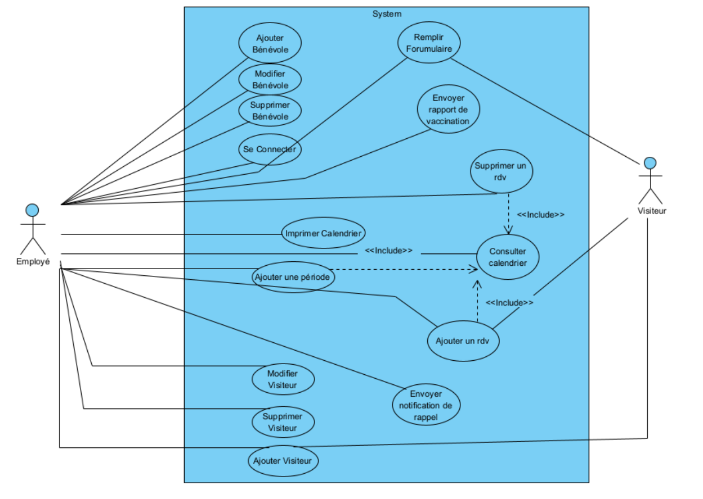
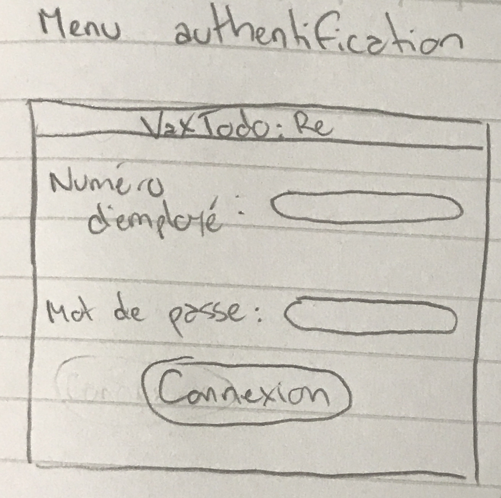
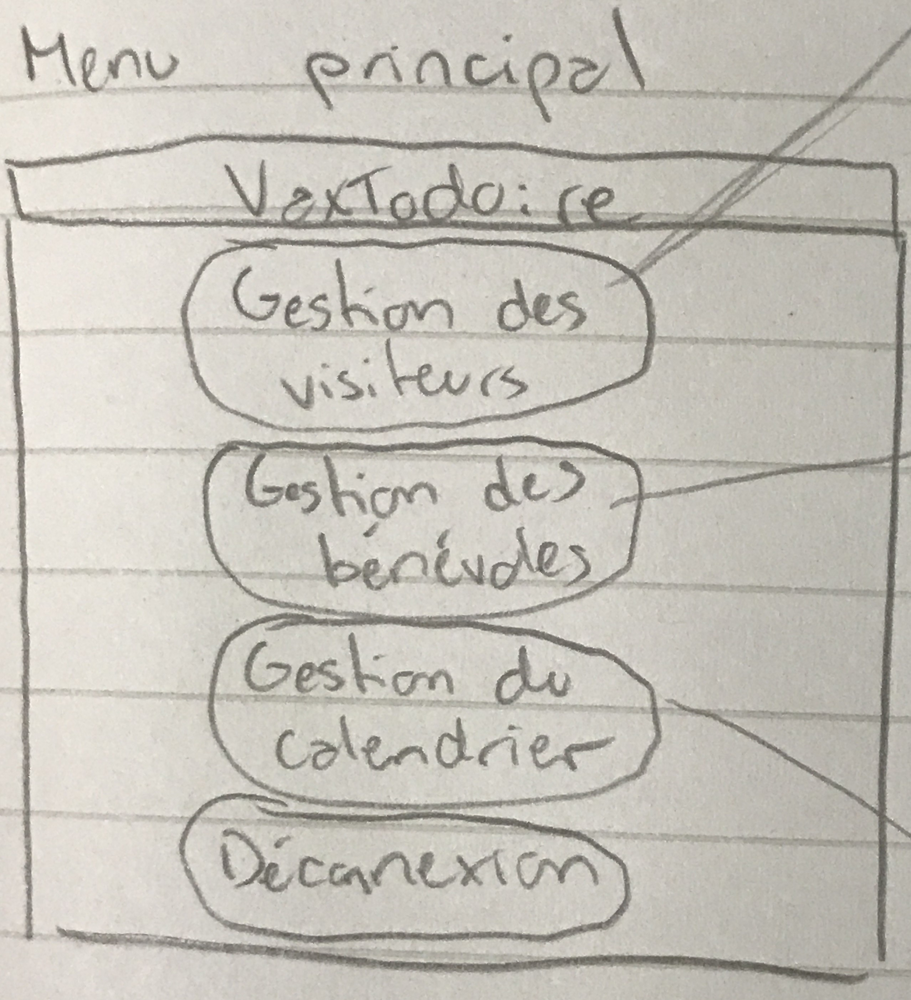
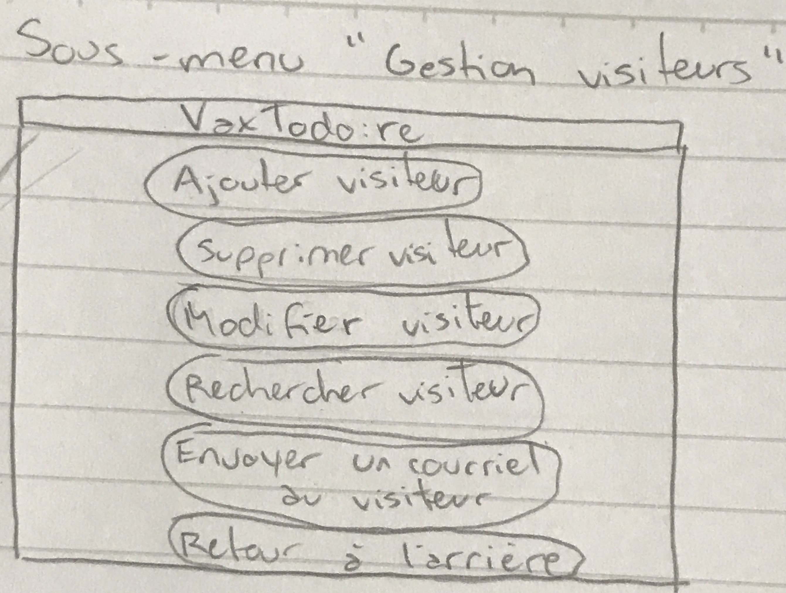
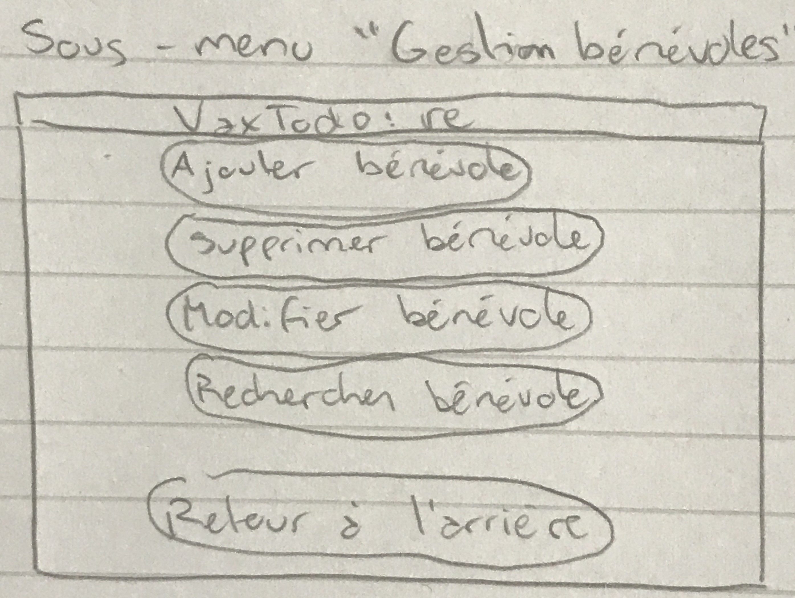
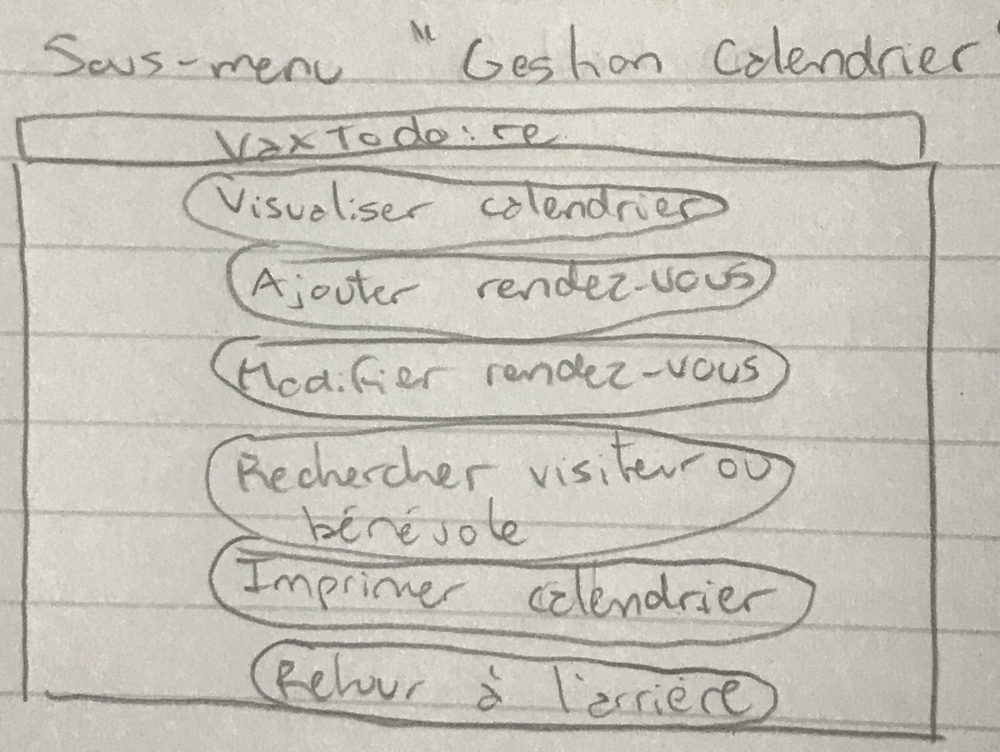

Planification
Phase d'analyse
L'organisme à but non lucratif GoodPeople organise une campagne de vaccination pour alléger le fardeau gouvernemental quant à sa lutte contre le virus du COVID-19. Le problème se retrouve dans la mauvaise gestion des rendez-vous ainsi que le manque de suivi à l'intérieur de délais raisonnables.
21/09/20: Premier échange avec le client.
Première semaine (09/22 - 09/27):
d'équipe pour discuter et comprendre le problème. Développement préliminaire du glossaire et des risques et besoins non-fonctionnels. Répartition des tâches.
21/09/28: Deuxième échange avec le client.
Deuxième semaine (09/29 - 10/04): Travail d'équipe pour établir les cas d'utilisation, son diagramme, les scénarios associés et l'analyse plus détaillée des besoins fonctionnels.
21/09/30: Troisième échange avec le client.
Troisième semaine (10/06 - 10/09):
Compréhension approfondie du contexte de développement du système. Finalisation des scénarios, des cas d'utilisation. Développement de prototypes jettables et adaptatif (implémentation Java). Rédaction d'un premier livrable.
Le système d'information à établir devra retenir les données personnelles d'un visiteur pour éliminer la redondance et faciliter la gestion de son dossier ainsi qu'avoir un accès direct à des dates pour faciliter la prise de rendez-vous et de suivis conséquents.
Le modèle de développement privilégiée sera un modèle agile unifié (itératif et incrémental) associé à la méthode Scrum. Ce modèle nous permettra de subdiviser les tâches de manière préférentielle tout en maintenant une vue globale constante et une capacité de chevauchement entre membres de mêmes incréments. Il sera aussi possible de retravailler sur un même incrément après un échange avec le client et après des tests, processus qui n'est pas supporté par des modèles linéaires ou simplement incrémentales.
Phase de conception
Il s'agit ici, de réfléchir à la meilleur manière d'organiser l'architecture du système voulu qui répondra au cahier des charges du client. L'objectif est de concevoir les plans du produit final de sorte que nous puissions avoir un logiciel final fiable, maintenable, fonctionnel et efficace. Nous devons aussi anticiper les besoins futurs que le client pourrait demander. Par exemple, est ce qu'à l'avenir le système s'exportera sur plusieurs centre de vaccination?
L'organisme à but non lucratif GoodPeople organise une campagne de vaccination pour lutter contre le COVID-19. Notre objectif est de proposer une solution pour rendre efficace le processus de vaccination à grande échelle. Pour cela, nous devons proposer un système permettant de gérer des rendez-vous et d'assurer un suivi dans des délais raisonnables.
Nous avons au préalable étudié les ressources disponibles et organiser les besoins du système lors de l'analyse des exigences. Ici, nous débuttons la conception du système en fournissant les diagrammes qui conceptualise de manière plus formel le logiciel. Pour cela, nous nous somme organisé de la sorte.
1 Novembre 2021
première rencontre avec l'équippe et répartition des rôles entre les membres. Nous décidons qu'il est pertinent de créer en premier lieu le diagramme de classe, puis d'activité et enfin de séquence avant de commencer le prototype fonctionnel. C'est aussi à ce moment que l'on se pose la question des besoins matériels qu'engendrera un tel système.
4 Novembre 2021
Edifice d'un diagramme d'entité participatentes entre nous avant de commencer à édifier les autres diagrammes pour s'accorder entre nous sur l'approche général du projet. Et identification des premiers modules possibles.
8 Novembre 2021
Réunions avec l'équipe sur la question de couplage et de la cohésion du système et mise en place du type de conception, de l'architecture envisagé. Questionnement sur la réutilisation des classes, etc.
Il a été décidé que l'architecture du système serait basé par une architecture interactive car l'utilisateur interagit directement avec le logiciel mais aussi basé sur une base de donnée car il est spécifié que les données des visiteurs seraient conservé dans un fichier texte placé dans un serveur. La partie interactive du logiciel sera un motif de type Modèle-Vue-Controleur. De ce fait, il serait intéressant de faire en sorte que le système soit une application basée web.
Compréhension du domaine
Après de nombreuses rencontres et une familiarisation avec l'activité VaxTodo, nous avons préparé une liste des questions posées, des réponses obtenues ainsi qu'un glossaire rassemblant tous les termes et expressions-clés caractérisant le contexte.
Premier échange
Q: Avant VaxTodo, comment la vaccination des personnes était-elle effectuée?
R: La façon de procéder à la vaccination ne change pas. C'est plutôt la logistique et les
mesures mises en place
qui seront adaptées.
Q: Faut-il ouvrir de nouvelles succursales pour répondre à la grande demande?
R: Non, nous ne prévoyons pas ouvrir un nouveau local. Le budget dont nous disposons servira
à optimiser celui qu'on a.
Q: Des acteurs autres que le gouvernement peuvent-ils pratiquer la vaccination?
R: L'organisation GoodPeople s'occupe de gérer cette campagne. Le gouvernement n'est
pas impliqué dans
ce qui se passe à l'interne.
Q: Est-il possible de déployer plusieurs campagnes similaires à celle-ci dans le futur?
(persistance
et réutilisation des données)
R: À l'instant, nous ne planifions rien de plus. Par contre, nous aimerions garder les
données pertinentes liées
aux visiteurs, aux bénévoles ainsi qu'au calendrier des rendez-vous.
Q: Sommes-nous obligés d'avoir un statut valide pour nous faire vacciner? (ex: personne qui
n'ont pas de NAS)
R: Il faut nécessairement une carte d'assurance maladie. Si le visiteur n'en a pas ou qu'elle
est expirée,
la visite est annulée et l'employé l'invite à prendre un nouveau rendez-vous.
Q: Le gouvernement cadencera-t-il la campagne selon s'il ouvre la vaccination pour une
tranche d'age
en particulier? (ex: ouvrir la seconde dose pour les adolescents) Ou selon s'il permet la seconde
dose par exemple ?
Ou n'importe qui est libre de se vacciner comme bon lui semble ?
R: L'initiative permet à toute personne majeure agée de 18 ans et plus de prendre un
rendez-vous avec
GoodPeople pour se faire vacciner (première dose ou deuxième dose).
Q: Y'a-t-il un rappel par notification ou courriel? (besoin non-fonctionnel)
R: Si ceci réfère au rappel lié à un rendez-vous subséquent, il y a possibilité de le faire.
L'employé utilise le
système pour envoyer une notification par courriel, rappelant à un visiteur son rendez-vous
prochain. Ceci sera
une fonctionalité du système (besoin fonctionnel).
Q: Le logiciel doit-il être implémenter comme une appli mobile, un site web ou comme un
standalone, etc?
R: Le système VaxTodo:re sera un logiciel sur une douzaine d'ordinateurs à notre
disposition,
ces derniers étant connectés entre eux à un serveur pour stocker les données.
Deuxième échange
Q: Comment se fait la gestion des bénévoles?
R: L'employé peut accéder à la liste des bénévoles pour en ajouter, modifier ou supprimer.
Chacun de ces éléments peut aussi être visualisé individuellement.
Q: Que se passe-t-il quand les informations personnelles d'une personne sont invalides?
R: Lors d'une invalidité d'information au niveau du numéro de réservation ou de carte
d'assurance maladie se
présentent, le visiteur est invité à reprendre un nouveau rendez-vous.
Q: Sous quelle forme se présente la preuve de vaccination dans le système? Qu'en est-il de la
forme physique de cette preuve?
R: La preuve de vaccination a la forme d'un document PDF présentant le nom du visiteur, sa
date de naissance,
un code QR et la liste des vaccins administrés. Ce document PDF est envoyé par courriel aux
visiteurs par l'employé à
la fin de chaque journée.
Troisième échange
Q: Comment récupérer les détails de vaccination du visiteur après sa vaccination (lot, type
vaccin, etc)?
De la même façon, est-ce que le questionnaire remis au professionnel de la santé est remis à
l'employé pour
compléter la mise d'informations dans le système?
R: Il y a communication implicite entre le professionel de la santé et l'employé pour entrer
toute l'information pertinente dans le dossier du visiteur.
Quatrième échange (28 octobre)
Q: Bonjour, par rapport au prototype que l'on attend pour le second devoir. Est ce
qu'on
attend une prototype plus élaboré que celui du premier devoir ? c'est à dire qu'au lieu d'avoir
une grosse fonction main avec plein de if imbriqué on aurait plutôt un objet pour chaque fenêtre
de l'application CLI ?
R: Le prototype est une application Java basée sur votre design
(diagramme de classes), permettant de tester vos CUs. Étant à la première itération du design et du
code, l'implémentation peut être légèrement différente de votre design.
Cependant, tout comme le design, le code doit être modulé entre plusieurs classes encapsulant le
UI (ex: Menu), le traitement des requêtes (ex: Système, Contrôleur) et les entités (ex:
Utilisateur, Visiteur, Vaccin).
Le fichier README doit décrire la marche à suivre pour utiliser et tester le prototype.
Cinquième échange (1 Novembre)
Q: De plus, il est demandé de lier le travail updaté du dm1 dans le rapport du dm2.
Est
c’est que cela signifie qu’il faut que l’on se base sur la correction du dm1 ou alors devons nous
nous baser sur la nouvelle description (dans laquelle il est décrit dès changement structurel par
rapport à l’ancienne description) ?
Par exemple : si admettons la description du dm2 induit de nouveau termes, alors on doit inclure les
nouveaux termes dans le glossaire ou alors on se contente de seulement utiliser le corrigé
R: La mise à jour des besoins et CUs doit s'aligner sur le nouvel énoncé.
Cependant, vous pouvez utiliser la correction pour vous aider à les améliorer ou les corriger.
Pour plus de détails sur la correction de votre devoir, vous pouvez demander à Aurélien.
Q: Peux t on envisager un système dans lequel les professionnels de santé pourraient
se
connecter et inscrire le profil de vaccination du patient directement dans le système ? les
prototypes doivent il forcément être des menus écrit en java ?
R: 1) Les professionnels n'auront pas accès au système 2) Le prototype du DM2 est une
application fonctionnelle écrite en Java.
Glossaire
- Organisme sans but lucratif (OSBL):
- Entité qui regroupe un ou plusieurs individus ayant un but commun à caractère moral et dont les gains pécuniaires sont réinvestis dans l'oeuvre entreprise.
- Requêtes liées à la vaccination
- Regroupement de la demande de preuve de vaccination et de la demande de changement ou d'annulation d'un rendez-vous.
- Demande de preuve de vaccination
- Une demande faite par le client recue par courriel de la preuve de vaccination
- Preuve de vaccination
- Document PDF présentant le nom du visiteur, sa date de naissance, un code QR et la liste des vaccins administrés.
- Demande de changement ou d'annulation d'un rendez-vous
- Le visiteur peut communiquer avec l'employé pour modifier ou annuler un rendez-vous
- Planifier une nouvelle dose
- Après le premier vaccin, le visiteur peut organiser une deuxième visite avec l'employé pour obtenir un deuxième vaccin (à délai minimum d'un mois) par l'intermédiaire du calendrier.
- Traitement du dossier
- Création du compte visiteur (lors de la première visite), confirmation du rendez-vous et des renseignements personnels.
- Visite planifiée
- Réservation planifié par téléphone (pour la première visite) entre visiteur et employé ou à la suite du premier vaccin (pour la deuxième visite).
- Visite spontanée
- Visite sans réservation que l'employé essaie d'intégrer dans la plage horaire pertinente lors de l'accueil. Décrit aussi l'arrivée tardive (15 minutes de retard) d'un visiteur planifié.
- Plage horaire
- Période d'une heure (entre 8h et 18h) durant laquelle un visiteur peut recevoir un traitement. Limité à 15 rendez-vous et le reste est occupé par les visiteurs spontanés.
- Accueil du visiteur
- Processus de confirmation du rendez-vous entre bénévole et visiteur. L'attente et la mise en importance des visites planifiées.
- Annulation d'un rendez-vous
- Le rendez-vous est annulé si le visiteur le fait volontairement, si le visiteur arrive en retard (15 minutes) ou si le visiteur n'a pas une carte d'assurance maladie ou si elle est expirée/invalide.
- Bénévole
- Individu non rémunéré qui accueille et dirige le visiteur vers l'employé.
- Employé
- Individu de GoodPeople ayant accès au système d'information VaxTodo:re qui a pour rôle le traitement complet du dossier d'un visiteur.
- Professionel
- Individu rémunéré dans le secteur de la santé qui s'occupe du processus de vaccination et du respect des règles sanitaires.
- Visiteur
- Individu qui veut se faire vacciner.
- Compte visiteur
- Dossier qui documente les informations personnelles, le profil de vaccination et les réservations d'un visiteur.
- Numéro de compte visiteur
- Numéro unique à douze chiffres, rattaché à un courriel et un compte visiteur uniques. Servira de communication plus rapide entre employé et visiteur lors de la prochaine visite.
- Profil de vaccination
- Regroupement des informations liées au vaccin reçu. Il inclut le type de dose, de vaccin, ainsi que la date et l'heure de la vaccination.
- Type de dose
- Identifié par 1 ou 2 (premier ou deuxième).
- Identification du vaccin
- Le nom, le code et le lot du vaccin.
- Réservation
- Rétention d'une place abstraite pour le service de vaccination. Lié à un numéro unique et aux détails reliés au visiteur et à la visite. Peut être fait pour un maximum de 2 personnes.
- Entrevue
- Série de questions (en forme de questionaire papier) posées au visiteur par l'employé en lien avec l'état du premier et des détails du vaccin désiré.
- Suivi
- Ensemble de renseignements obtenus sur un visiteur ayant récemment reçu le vaccin et qui permet d'étudier l'évolution de son état physique et mental.
- Système d'information VaxTodo:re
- Entité responsable de la gestion des comptes visiteurs et les suivis et qui regroupe tout information se rapportant à ces derniers services. Manipulée par l'employé.
- Code QR
- La preuve de vaccination et toute information reliée à la vaccination dans un code matriciel unique.
- Code d'employé
- Numéro unique à 9 chiffres utilisé par l'employé pour accéder au système VaxTodo:re.
- Mot de passe employé
- Code unique utilisé par l'employé en tandem avec le code d'employé pour accéder au système. Composé d'au moins 8 caractères contenant au moins 1 chiffre, 1 minuscule 1 majuscule et 1 caractère spécial.
- Rapport de vaccination d'une visite
- Ensemble des informations lors du traitement d'un visiteur (sur le vaccin, la visite et autre informations pertinentes).
Modélisation du domaine
Cas d'utilisation
Scénarios
Analyse
Notre analyse préliminaire nous a permet d'identifier les risques suivants et les exigences non-fonctionnelles associées au contexte présent.
Risques
- Divulgation des données personnelles d'un individu
- Perte de l'information stockée antérieurement
- Difficulté d'utilisation pour l'employé
- Manque d'espace pour entrer toutes les données
- Désorganisation de l'information / Confusion liée à l'information entre utilisateurs
Exigences non-fonctionnelles
- Sécurité
- Récupérabilité
- Convivialité
- Capacité
- Maintenabilité
Prototypes
-  Menu de base. Sert d'authentification de l'employé.
-  Menu principal après connexion.
-  Sous-menu "Gestion des visiteurs".
-  Sous-menu "Gestion des benevoles".
-  Sous-menu "Gestion du calendrier".